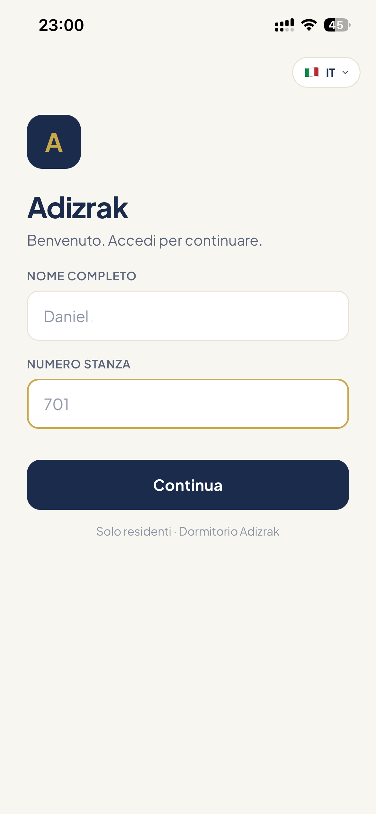
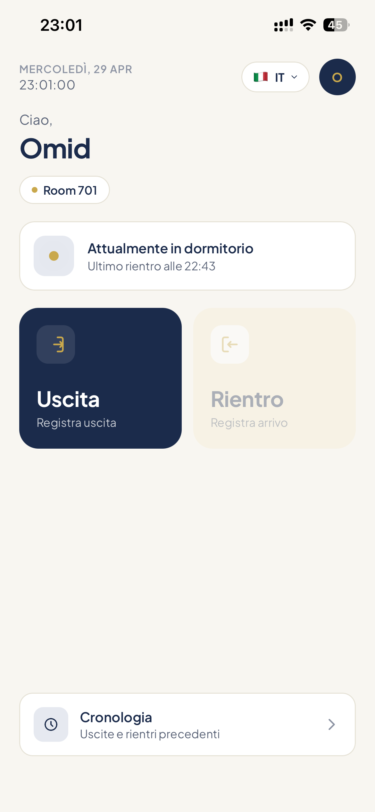
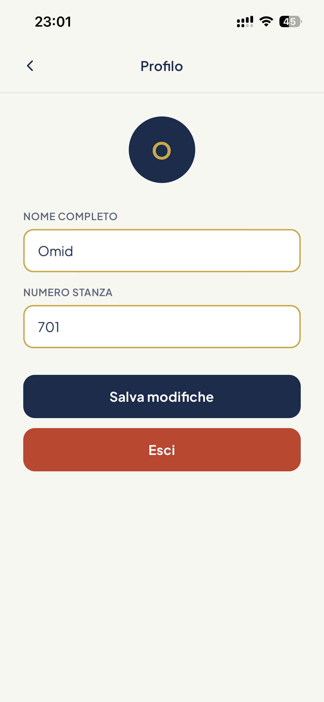
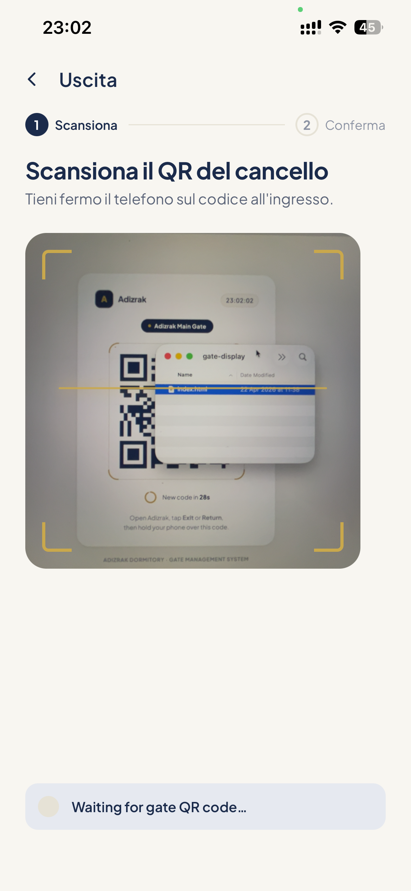
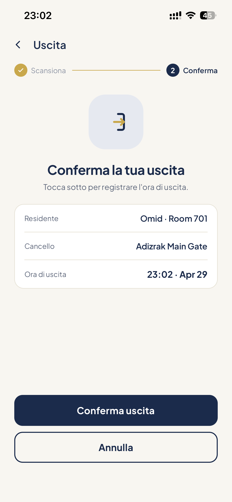
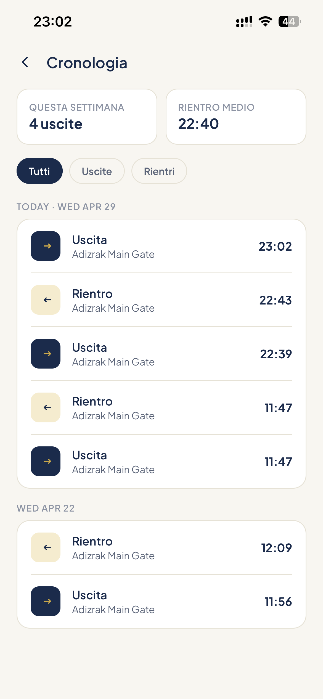

🚀 MVP · Prototipo Funzionante
Il Futuro del Controllo Accessi nei Dormitori
Una soluzione digitale, flessibile e igienica che sostituisce il registro cartaceo con tecnologia QR avanzata.
Scopri di più →Una soluzione digitale, flessibile e igienica che sostituisce il registro cartaceo con tecnologia QR avanzata.
Scopri di più →Il Problema
I dormitori usano ancora il registro cartaceo e una penna condivisa. Semplice, ma lento, non igienico e impossibile da scalare.
Tutti i residenti condividono la stessa penna. Un rischio sanitario semplice da eliminare con la tecnologia.
Code all'ingresso, firma manuale, dipendenza dal personale al cancello. Il sistema rallenta tutti.
La direzione non sa in tempo reale chi è dentro e chi è fuori. Nessun dato, nessun controllo.
Come Funziona
Il residente apre l'app, inquadra il QR al cancello e conferma. La presenza fisica è l'unica chiave — nessuna delega possibile.
Il residente vede il suo stato attuale in tempo reale — dentro o fuori — e sceglie l'azione.
Il QR ruota ogni 30 secondi. Solo chi è fisicamente davanti al cancello può scansionarlo.
Il residente vede i dettagli: cancello, orario, nome. Conferma e il dato viene salvato e sincronizzato.
Video
Una dimostrazione completa del flusso di uscita e rientro — dal cancello allo storico.
Architettura
Tre livelli di resilienza garantiscono che il sistema non si fermi mai — con internet, senza internet, o anche senza elettricità.
Con internet attivo, i dati vanno al server centrale. La direzione vede chi è dentro e fuori in tempo reale da qualsiasi dispositivo.
L'app continua a funzionare localmente. I dati si sincronizzano automaticamente non appena la connessione torna disponibile.
Anche senza elettricità o internet, il sistema produce report stampati professionali — superiori al registro manuale e sempre disponibili.
Funzionalità
Il QR rotante certifica che il residente sia fisicamente al cancello. Nessuna registrazione per delega.
L'indicatore pulsante mostra in questo momento se il residente è dentro o fuori dal dormitorio.
Ogni accesso è registrato e filtrabile per data, uscite o rientri.
Italiano, Inglese, Farsi e Arabo con supporto completo per le lingue da destra a sinistra.
Ogni residente gestisce nome, numero stanza e può effettuare il logout in autonomia.
Funziona sullo smartphone già posseduto. Nessun tornello, lettore, tessera o infrastruttura fisica.
Confronto
| 📋 Registro Cartaceo | ✦ Adisurc | |
|---|---|---|
| Igiene | Penna condivisa ✗ | Nessun contatto ✓ |
| Velocità | Lento, code ✗ | 3 secondi ✓ |
| Visibilità direzione | Nessuna ✗ | Tempo reale ✓ |
| Verifica presenza | Non garantita ✗ | QR fisico ✓ |
| Funziona offline | Sempre ✓ | Sì, con sync ✓ |
| Costo hardware | Carta e penne ✗ | Zero ✓ |
| Backup dati | Nessuno ✗ | Server + stampa ✓ |
Schermate






Guarda il video, esplora il prototipo e dicci cosa ne pensi. Siamo pronti per il pilota.
Contattaci per il feedback →